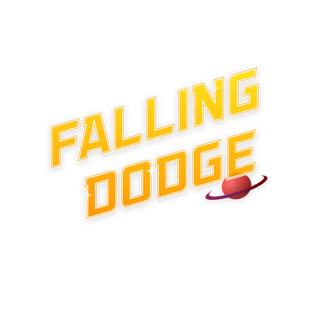

Tu nuevo videojuego favorito hecho por alumnos de ESCOM usando HTML5, JS & Windows.
Tu nuevo videojuego favorito hecho por alumnos de ESCOM usando HTML5, JS & Windows.
Sam se encontró en una ciudad llena desierta y a lo lejos se bosquejaban unas ruinas, el miraba a lo lejos cuando de pronto comenzaron a caer bloques de colores, era lo que llamaban una lluvia. Llovía a menudo por eso era difícil mantener a las ciudades a salvo y una vez que una ciudad era destruida las lluvias se agudizaban en aquel punto de Marte.
Sam ahora debe de escapar de los bloques que caen del cielo para poder llegar con vida a su destino y salvar a su familia.
El juego estará disponible para Windows 8 y Windows 8 RT en el verano de 2014 y si recibimos buena respuesta de la comunidad, podríamos tenerlo disponible para iOS y Android a finales del 2014.